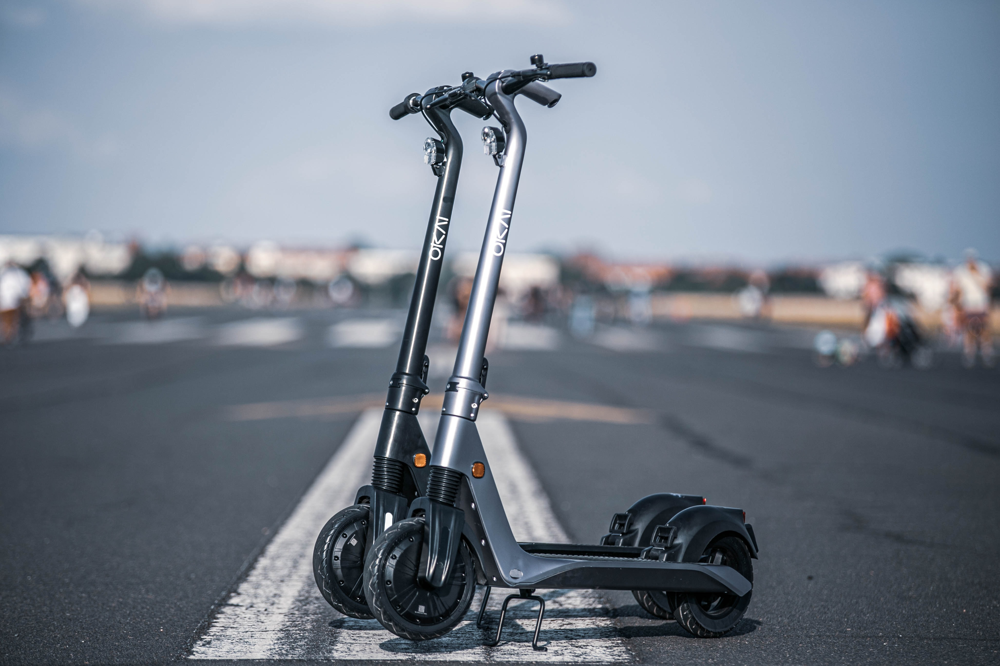

VeoRide Scooters: Good Or Bad?
Where did this scooters come from?
Electric scooters seem to be everywhere nowadays. Whether you are visiting a big city or walking across a college campus to your next class, scooter riders can be seen hastily zooming across the sidewalks and roads.
Bird was the first company to launch shared electric scooters in the United States and they debuted their first devices in Santa Monica, C.a. in September of 2017. With their growing popularity, they continued to expand their business across the country. Naturally, this brought competitors, like VeoRide, Lime, and many more.
Due to the popularity of the scooters, the City Council voted unanimously to approve a new, three-year contract with the electric scooter company in April of 2022. The contract included a price increase to 38 cents and now requires users to park them in designated parking hubs around campus. On top of that, the company will be incrementally increasing the scooters to 400 scooters over the contract’s duration.
The council has raised concerns in the past about the scooters being carelessly left around College Park, but the app has created “geo-fencing technology” to track the locations of the scooters and only allow vehicles to be parked in designated areas.
Along with this new contract, students at the University of Maryland have started purchasing their own, personal scooters to use whenever they please.